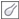

ыстрые ссылки на процедуры, описанные на этой странице:
• |
• |
• |
В программе Corel PHOTO-PAINT доступны фильтры (эффекты настройки) и инструменты для настройки цвета и тона изображений. При настройке цвета и тона выполняется настройка таких параметров, как оттенок, насыщенность, яркость, контрастность или интенсивность. Если необходимо настроить цвет и тон всего изображения, можно применить фильтр настройки напрямую для изображения или использовать линзу, которая находится на отдельном слое объекта и которую можно отредактировать, не изменяя исходное изображение. Для получения сведений о линзах см. раздел Работа с линзами.
Можно настроить часть изображения путем редактирования размера или формы линз или путем создания редактируемой области до применения фильтра настройки. Для получения сведений о редактируемых областях см. раздел Работа с масками.
Перед началом работы с отдельными фильтрами попробуйте использовать лабораторию по корректировке изображений. Для получения дополнительных сведений о лаборатории по корректировке изображений см. раздел Использование лаборатории по корректировке изображений.
В приведенной ниже таблице перечислены фильтры, которые можно использовать для настройки изображений.
Одни фильтры выполняют автоматическую настройку изображения, другие позволяют использовать различные уровни управления. Например, фильтр Автонастройка автоматически настраивает тоновый диапазон всех цветовых каналов, в то время как фильтр Цветовая кривая позволяет использовать отдельные цветовые каналы, чтобы указать и настроить тон или цвет. Расширенные фильтры, например Цветовая кривая и Увеличение контрастности, позволяют выполнять точную настройку и исправлять разные проблемы, но для их использования необходима практика.
Чтобы оценить и настроить цвет и тон, можно просматривать тоновый диапазон изображения с помощью гистограмм. Например, с помощью гистограммы можно определить скрытые детали на фотографии, которая слишком затемнена из-за недоэкспонирования (фотография, сделанная при недостаточном освещении).
На гистограмме есть горизонтальная столбиковая диаграмма, на которой отображаются значения яркости пикселей на изображении по шкале от 0 (темный) до 255 (светлый). В левой части гистограммы представлены тени изображения, в средней части — промежуточные, а в правой — светлые тона. Высота пиков обозначает количество пикселей каждого уровня яркости. Например, большое количество пикселей в области теней (левая часть гистограммы) обозначает наличие деталей в темных участках изображения.
Гистограммы доступны в следующих фильтрах:
• |
Увеличение контрастности
|
• |
Выравнивание гистограммы
|
• |
Балансировка по образцам
|
• |
Цветовая кривая
|
Выше представлены фотографии с различной экспозицией: нормальная (верхняя), передержанная (средняя), недодержанная (нижняя). Гистограммы для каждой фотографии (справа) показывают распределение пикселей от темных к светлым. На фотографии со средней экспозицией пиксели более равномерно распределены по тоновому диапазону.
Можно настроить яркость, контрастность, оттенок или насыщенность любой части изображения с помощью эффектов кисти. Например, если необходимо сделать объект на фотографии светлее, для осветления необходимой области без влияния на окружающую область можно использовать инструмент Яркость.
Можно использовать заготовки кистей или создать специальную кисть. Для получения дополнительных сведений см. раздел Создание специальных кистей.
| Настройка цвета и тона изображения |
1. |
Выберите Настройка, а затем фильтр настройки.
|
2. |
Укажите необходимые параметры в диалоговом окне.
|
Описание фильтров настройки см. в разделе Обзор фильтров
настройки.
|
Можно сравнить исходное изображение с настроенным
изображением, нажав кнопку двойного окна предварительного
просмотра в диалоговых окнах фильтров.
|
Можно настроить цвет и тон в редактируемой области, определив ее
до выбора фильтра настройки.
|
| Интерактивная настройка тона изображения с помощью гистограммы |
1. |
Выберите Настройка |
2. |
Перемещайте стрелки в области Обрезка входных значений , чтобы
настроить тени и светлые тона.
|
Стрелка, расположенная слева, позволяет затемнить области теней. Перетаскивайте стрелку до тех пор, пока она не будет указывать на участок, в котором на гистограмме начинают появляться пики. |
Стрелка, расположенная справа, позволяет осветлить области светлых тонов. Перетаскивайте стрелку до тех пор, пока она не будет указывать на участок, в котором пики на гистограмме исчезают. |
3. |
Перемещайте регулятор Настройка гаммы, чтобы настроить
промежуточные тона.
|
4. |
Перемещайте стрелки в области Сжатие выходного диапазона , чтобы
выполнить точную настройку контрастности.
|
Чтобы осветлить темные области, перемещайте левую стрелку вправо. |
Чтобы затемнить светлые области, перемещайте правую стрелку влево. |
На гистограмме отображаются настроенные значения в виде черного
абриса и исходные значения в виде оттенков серого.
|
Можно сравнить исходное изображение с настроенным
изображением, нажав кнопку двойного окна предварительного
просмотра в диалоговых окнах фильтров.
|
| Настройка цвета и тона изображения с помощью эффектов кисти |
1. |
Выберите объект или фоновое изображение.
|
2. |
В наборе инструментов выберите инструмент Эффект .
|
3. |
На панели свойств откройте меню выбора эффектов и выберите один из
следующих эффектов.
|
• |
Яркость : используется для осветления или затемнения изображения.
|
• |
Контрастность : используется для повышения или понижения
контрастности.
|
• |
Оттенок : используется для сдвига всех оттенков по цветовому кругу
на угол, указанный в окне Количество.
|
• |
Замена оттенков : используется для сохранения значений яркости и
насыщенности исходных цветов, но при этом заменяет все оттенки
текущим цветом краски.
|
• |
Губка : используется для увеличения или уменьшения насыщенности
цветов.
|
• |
Осветление/затемнение : используется для осветления (передержки)
или затемнения (недодержки) изображения. В списке Тип кисти
выберите заготовку кисти «Осветление» или «Затемнение».
|
• |
Оттенок : используется для легкой окраски изображения текущим
цветом краски.
|
4. |
Выберите заготовку кисти в списке Тип кисти на панели свойств.
|
Если требуется создать специальную кисть, укажите необходимые параметры на панели свойств. |
5. |
Перетащите курсор в окне изображения.
|
Copyright 2012 Corel Corporation. Все права защищены.